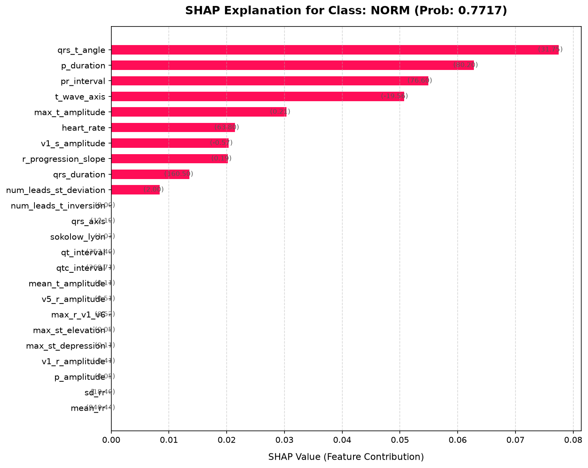
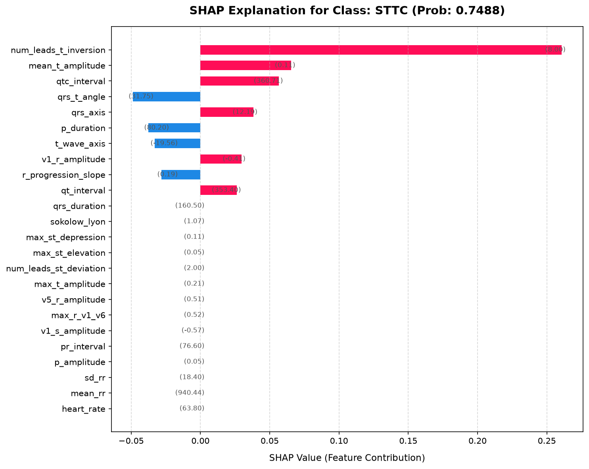
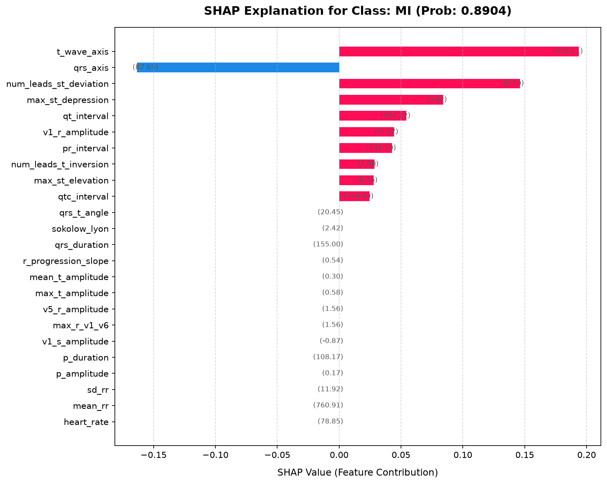
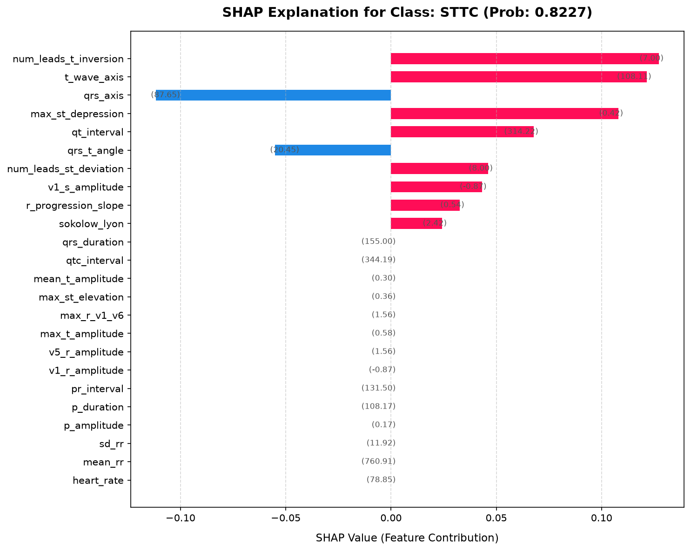
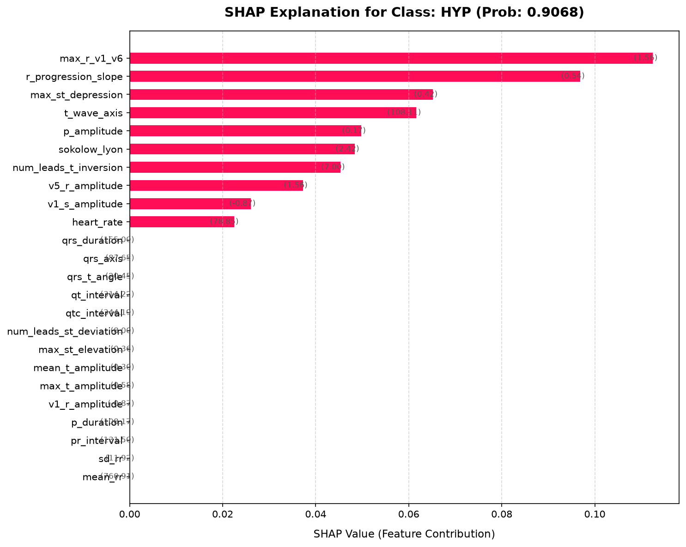
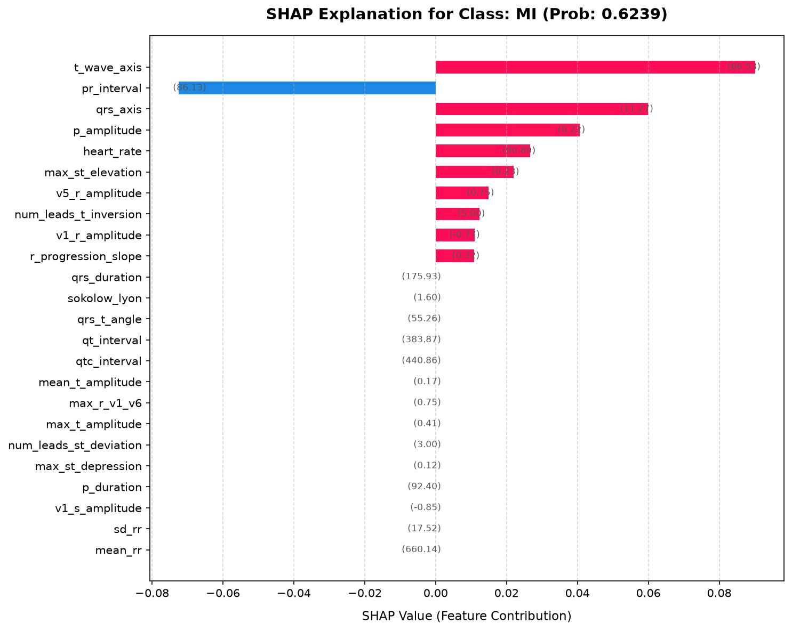
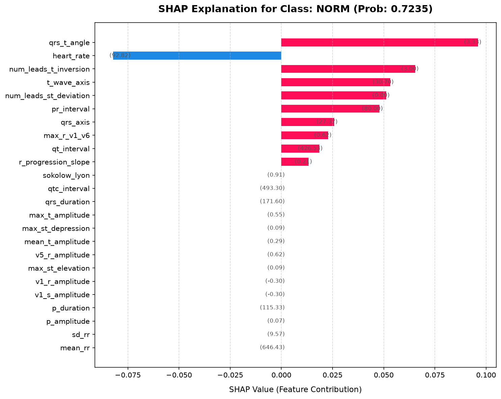
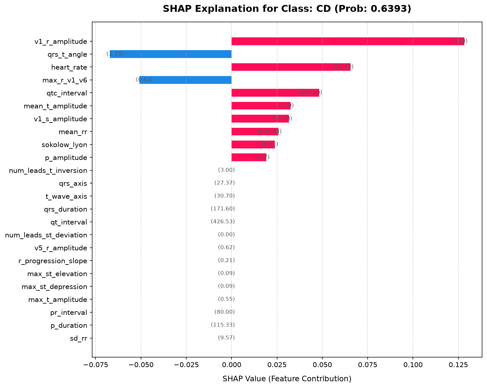

Record ID: 3
Ground Truth: NORMPipeline Probabilities
NORM: 0.7717 (thresh: 0.40)
MI: 0.1632 (thresh: 0.60)
STTC: 0.7488 (thresh: 0.59)
CD: 0.1576 (thresh: 0.59)
HYP: 0.0386 (thresh: 0.76)
SHAP Explanation for prediction: NORM (0.7717)
Top Positive Contributing Biomarkers
- qrs_t_angle: +0.0775 (val: 31.75)
- p_duration: +0.0628 (val: 80.20)
- pr_interval: +0.0549 (val: 76.60)
- t_wave_axis: +0.0507 (val: -19.56)
- max_t_amplitude: +0.0303 (val: 0.21)
Top Negative Contributing Biomarkers
- None

SHAP Explanation for prediction: STTC (0.7488)
Top Positive Contributing Biomarkers
- num_leads_t_inversion: +0.2607 (val: 8.00)
- mean_t_amplitude: +0.0656 (val: 0.11)
- qtc_interval: +0.0567 (val: 360.71)
- qrs_axis: +0.0383 (val: 12.19)
- v1_r_amplitude: +0.0297 (val: -0.41)
Top Negative Contributing Biomarkers
- qrs_t_angle: -0.0489 (val: 31.75)
- p_duration: -0.0376 (val: 80.20)
- t_wave_axis: -0.0330 (val: -19.56)
- r_progression_slope: -0.0281 (val: 0.19)

Record ID: 146
Ground Truth: MI, STTC, HYPPipeline Probabilities
NORM: 0.0220 (thresh: 0.40)
MI: 0.8904 (thresh: 0.60)
STTC: 0.8227 (thresh: 0.59)
CD: 0.3050 (thresh: 0.59)
HYP: 0.9068 (thresh: 0.76)
SHAP Explanation for prediction: MI (0.8904)
Top Positive Contributing Biomarkers
- t_wave_axis: +0.1937 (val: 108.11)
- num_leads_st_deviation: +0.1461 (val: 8.00)
- max_st_depression: +0.0839 (val: 0.42)
- qt_interval: +0.0543 (val: 314.22)
- v1_r_amplitude: +0.0445 (val: -0.87)
Top Negative Contributing Biomarkers
- qrs_axis: -0.1635 (val: 87.65)

SHAP Explanation for prediction: STTC (0.8227)
Top Positive Contributing Biomarkers
- num_leads_t_inversion: +0.1272 (val: 7.00)
- t_wave_axis: +0.1214 (val: 108.11)
- max_st_depression: +0.1080 (val: 0.42)
- qt_interval: +0.0677 (val: 314.22)
- num_leads_st_deviation: +0.0461 (val: 8.00)
Top Negative Contributing Biomarkers
- qrs_axis: -0.1117 (val: 87.65)
- qrs_t_angle: -0.0551 (val: 20.45)

SHAP Explanation for prediction: HYP (0.9068)
Top Positive Contributing Biomarkers
- max_r_v1_v6: +0.1125 (val: 1.56)
- r_progression_slope: +0.0969 (val: 0.54)
- max_st_depression: +0.0652 (val: 0.42)
- t_wave_axis: +0.0616 (val: 108.11)
- p_amplitude: +0.0498 (val: 0.17)
Top Negative Contributing Biomarkers
- None

Record ID: 54
Ground Truth: STTCPipeline Probabilities
NORM: 0.3366 (thresh: 0.40)
MI: 0.6239 (thresh: 0.60)
STTC: 0.5792 (thresh: 0.59)
CD: 0.2620 (thresh: 0.59)
HYP: 0.4538 (thresh: 0.76)
SHAP Explanation for prediction: MI (0.6239)
Top Positive Contributing Biomarkers
- t_wave_axis: +0.0901 (val: 66.53)
- qrs_axis: +0.0599 (val: 11.27)
- p_amplitude: +0.0407 (val: 0.22)
- heart_rate: +0.0267 (val: 90.89)
- max_st_elevation: +0.0221 (val: 0.23)
Top Negative Contributing Biomarkers
- pr_interval: -0.0725 (val: 86.13)

Record ID: 45
Ground Truth: CD, HYPPipeline Probabilities
NORM: 0.7235 (thresh: 0.40)
MI: 0.1896 (thresh: 0.60)
STTC: 0.0220 (thresh: 0.59)
CD: 0.6393 (thresh: 0.59)
HYP: 0.1462 (thresh: 0.76)
SHAP Explanation for prediction: NORM (0.7235)
Top Positive Contributing Biomarkers
- qrs_t_angle: +0.0960 (val: 3.33)
- num_leads_t_inversion: +0.0654 (val: 3.00)
- t_wave_axis: +0.0532 (val: 30.70)
- num_leads_st_deviation: +0.0512 (val: 0.00)
- pr_interval: +0.0479 (val: 80.00)
Top Negative Contributing Biomarkers
- heart_rate: -0.0823 (val: 92.82)

SHAP Explanation for prediction: CD (0.6393)
Top Positive Contributing Biomarkers
- v1_r_amplitude: +0.1283 (val: -0.30)
- heart_rate: +0.0655 (val: 92.82)
- qtc_interval: +0.0481 (val: 493.30)
- mean_t_amplitude: +0.0325 (val: 0.29)
- v1_s_amplitude: +0.0316 (val: -0.30)
Top Negative Contributing Biomarkers
- qrs_t_angle: -0.0672 (val: 3.33)
- max_r_v1_v6: -0.0509 (val: 0.62)
